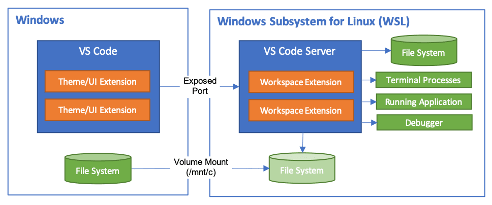

Developing in WSL
The Visual Studio Code WSL extension lets you use the Windows Subsystem for Linux (WSL) as your full-time development environment right from VS Code. You can develop in a Linux-based environment, use Linux-specific toolchains and utilities, and run and debug your Linux-based applications all from the comfort of Windows.
The extension runs commands and other extensions directly in WSL so you can edit files located in WSL or the mounted Windows filesystem (for example /mnt/c) without worrying about pathing issues, binary compatibility, or other cross-OS challenges.

This lets VS Code provide a local-quality development experience including full IntelliSense (completions), code navigation, and debugging regardless of where your code is hosted.
Getting started
Note: After reviewing this topic, you can get started with the introductory WSL tutorial.
Installation
To get started, you need to:
-
Install the Windows Subsystem for Linux along with your preferred Linux distribution.
Note: WSL 1 does have some known limitations for certain types of development. Also, extensions installed in Alpine Linux may not work due to
glibcdependencies in native source code inside the extension. See the Remote Development and Linux article for details. -
Install Visual Studio Code on the Windows side (not in WSL).
Note: When prompted to Select Additional Tasks during installation, be sure to check the Add to PATH option so you can easily open a folder in WSL using the
codecommand. -
Install the Remote Development extension pack.
Open a remote folder or workspace
From the WSL terminal
Opening a folder inside the Windows Subsystem for Linux in VS Code is very similar to opening up a Windows folder from the command prompt or PowerShell.
-
Open a WSL terminal window (using the start menu item or by typing
wslfrom a command prompt / PowerShell). -
Navigate to a folder you'd like to open in VS Code (including, but not limited to, Windows filesystem mounts like
/mnt/c) -
Type
code .in the terminal. When doing this for the first time, you should see VS Code fetching components needed to run in WSL. This should only take a short while, and is only needed once.Note: If this command does not work, you may need to restart your terminal or you may not have added VS Code to your path when it was installed.
-
After a moment, a new VS Code window will appear, and you'll see a notification that VS Code is opening the folder in WSL.

VS Code will now continue to configure itself in WSL and keep you up to date as it makes progress.
-
Once finished, you now see a WSL indicator in the bottom left corner, and you'll be able to use VS Code as you would normally!

That's it! Any VS Code operations you perform in this window will be executed in the WSL environment, everything from editing and file operations, to debugging, using terminals, and more.
From VS Code
Alternatively, you can open a WSL window directly from VS Code:
- Start VS Code.
- Press F1, select WSL: New WSL Window for the default distro or WSL: New WSL Window using Distro for a specific distro.
- Use the File menu to open your folder.
If you already have a folder open, you can also use the WSL: Reopen Folder in WSL command. You will be prompted which distro to use.
If you are in a WSL window and want to open the current input in a local window, use WSL: Reopen in Windows.
From the Windows command prompt
To open a WSL window directly from a Windows prompt use the --remote command line parameter:
code --remote wsl+<distro name> <path in WSL>
for example: code --remote wsl+Ubuntu /home/jim/projects/c
We need to do some guessing on whether the input path is a file or a folder. If it has a file extension, it is considered a file.
To force that a folder is opened, add slash to the path or use:
code --folder-uri vscode-remote://wsl+Ubuntu/home/ubuntu/folder.with.dot
To force that a file is opened add --goto or use:
code --file-uri vscode-remote://wsl+Ubuntu/home/ubuntu/fileWithoutExtension
Working with Git
If you are working with the same repository in WSL and Windows, be sure to set up consistent line endings. See tips and tricks for details.
You can also avoid passwords by configuring WSL to use the Windows Git credential manager. See tips and tricks for details.
Managing extensions
VS Code runs extensions in one of two places: locally on the UI / client side, or in WSL. While extensions that affect the VS Code UI, like themes and snippets, are installed locally, most extensions will reside inside WSL.
If you install an extension from the Extensions view, it will automatically be installed in the correct location. Once installed, you can tell where an extension is installed based on the category grouping. There will be Local - Installed category and one for WSL.

Note: If you are an extension author and your extension is not working properly or installs in the wrong place, see Supporting Remote Development for details.
Local extensions that actually need to run remotely will appear dimmed and disabled in the Local - Installed category. Select Install to install an extension on your remote host.

You can also install all locally installed extensions inside WSL by going to the Extensions view and selecting Install Local Extensions in WSL: {Name} using the cloud button at the right of the Local - Installed title bar. This will display a dropdown where you can select which locally installed extensions to install in your WSL instance.

Opening a terminal in WSL
Opening a terminal in WSL from VS Code is simple. Once folder is opened in WSL, any terminal window you open in VS Code (Terminal > New Terminal) will automatically run in WSL rather than locally.
You can also use the code command line from this same terminal window to perform a number of operations such as opening a new file or folder in WSL. Type code --help to see what options are available from the command line.

Debugging in WSL
Once you've opened a folder in WSL, you can use VS Code's debugger in the same way you would when running the application locally. For example, if you select a launch configuration in launch.json and start debugging (F5), the application will start on remote host and attach the debugger to it.
See the debugging documentation for details on configuring VS Code's debugging features in .vscode/launch.json.
WSL specific settings
VS Code's local user settings are also reused when you have opened a folder in WSL. While this keeps your user experience consistent, you may want to vary some of these settings between your local machine and WSL. Fortunately, once you have connected to WSL, you can also set WSL specific settings by running the Preferences: Open Remote Settings command from the Command Palette (F1) or by selecting the Remote tab in the Settings editor. These will override any local settings you have in place whenever you open a folder in WSL.
Advanced: Environment setup script
When VS Code Remote is started in WSL, no shell startup scripts are run. This was done to avoid issues with startup scripts that are tuned for shells. If you want to run additional commands or modify the environment this can be done in a setup script ~/.vscode-server/server-env-setup (Insiders: ~/.vscode-server-insiders/server-env-setup). If present, the script is processed before the server is started.
The script needs to be a valid Bourne shell script. Be aware that an invalid script will prevent the server from starting up. If you end up with a script that prevents the server from starting, you will have to use a regular WSL shell and delete or rename the setup script.
Check the WSL log (WSL: Show Log) for output and errors.
Advanced: Opening a WSL 2 folder in a container
If you are using WSL 2 and Docker Desktop's WSL 2 back-end, you can use the Dev Containers extension to work with source code stored inside WSL! Just follow these steps:
-
If you have not already, install and setup Docker Desktop's WSL 2 support.
Tip: Go to Settings > Resources > WSL Integration and enable Docker integration with the WSL distribution you will be using.
-
If you have not already, install the Dev Containers extension along with the WSL extension.
-
Next, open your source code folder in WSL as you would normally.
-
Once your folder is open in WSL, select Dev Containers: Reopen in Container from the Command Palette (F1).
-
If the folder does not have a
.devcontainer/devcontainer.jsonfile in it, you'll be asked to pick a starting point from a filterable list or an existing Dockerfile or Docker Compose file (if one exists).
-
The VS Code window (instance) will reload and start building the dev container. A progress notification provides status updates.

-
After the build completes, VS Code will automatically connect to the container. You can now work with the your source code from inside the container.
See the Dev Containers documentation for more information.
Known limitations
This section contains a list of common know issues with WSL. The intent is not to provide a complete list of issues but to highlight some of the common problems seen with WSL.
See here for a list of active issues related to WSL.
I see EACCES: permission denied error trying to rename a folder in the open workspace in WSL 1
That's a known problem with the WSL file system implementation (Microsoft/WSL#3395, Microsoft/WSL#1956) caused by the file watcher active by VSCode. The issue will only be fixed in WSL 2.
To avoid the issue, set remote.WSL.fileWatcher.polling to true. However, polling based file watching has a performance impact for large workspaces.
For large workspace you want to increase the polling interval: remote.WSL.fileWatcher.pollingInterval and control the folders that are watched: files.watcherExclude.
WSL 2 does not have that file watcher problem is also not affected by the new setting.
Golang in WSL 1
| Issue | Existing issues |
|---|---|
| Delve debugger doesn't work under WSL | go-delve/delve#810, Microsoft/vscode-go#926 |
Node.js in WSL 1
| Issue | Existing issues |
|---|---|
| NodeJS Error: spawn EACCES (different variants of this error) | Microsoft/WSL#3886 |
| Webpack HMR not working | Microsoft/WSL#2709 |
| Firebase via node unusably slow only on WSL | Microsoft/WSL#2657 |
Git limitations
If you clone a Git repository using SSH and your SSH key has a passphrase, VS Code's pull and sync features may hang when running remotely. Either use an SSH key without a passphrase, clone using HTTPS, or run git push from the command line to work around the issue.
Docker Extension limitations
While the Docker extension can run both remotely and locally, if it is already installed locally, you will be unable to install on a remote SSH host without first uninstalling it locally. We will address this problem in a future VS Code release.
Extension limitations
Many extensions will work in WSL without modification. However, in some cases, certain features may require changes. If you run into an extension issue, see here for a summary of common problems and solutions that you can mention to the extension author when reporting the issue.
In addition, some extensions installed in an WSL when using an Alpine Linux-based distribution may not work due to glibc dependencies in native code inside the extension. See the Remote Development with Linux article for details.
Common questions
Why am I asked to change the default distro?
When using WSL: New WSL Window using Distro and running on WSL older than Windows 10, May 2019 Update (version 1903) you will be asked to switch the default distribution as the WSL command can only work on the default distro as it does not support the -d option yet.
You can always manually switch the default distro by using wslconfig.exe.
For example:
wslconfig /setdefault Ubuntu
You can see which distributions you have installed using:
wslconfig /l
I'm seeing an error about a missing library or dependency
Some extensions rely on libraries not found in the vanilla install of certain WSL Linux distributions. You can add additional libraries into your Linux distribution by using its package manager. For Ubuntu and Debian based distributions, run sudo apt-get install <package> to install the needed libraries. Check the documentation for your extension or the runtime that is mentioned for additional installation details.
What are the connectivity requirements for the WSL extension?
The WSL extension and VS Code Server require outbound HTTPS (port 443) connectivity to:
update.code.visualstudio.commarketplace.visualstudio.comvscode.blob.core.windows.net*.vo.msecnd.net(Azure CDN)*.gallerycdn.vsassets.io(Azure CDN)
Some extensions (like C#) download secondary dependencies from download.microsoft.com or download.visualstudio.microsoft.com. Others (like Visual Studio Live Share) may have additional connectivity requirements. Consult the extension's documentation for details if you run into trouble.
All other communication between the server and the VS Code client is accomplished through an random local TCP port. You can find a list of locations VS Code itself needs access to in the network connections article.
I'm behind a proxy and have connectivity issues
Proxy settings might be missing on either the Windows or the WSL side.
When a remote window is opened out of VSCode, the WSL extension tries to download the VSCode server on the Windows side. It therefore uses the Window side proxy configuration:
- inherited from the OS settings
- as described in Network Connections in Visual Studio Code
When the remote VSCode is started from a WSL terminal, the download is done using wget in the WSL distro. Proxy settings can be configured in:
- wget proxy settings: https://stackoverflow.com/questions/11211705/how-to-set-proxy-for-wget
- manually in the server setup script
Once the server is up and running the proxy settings on the Remote tab are used.
Can I force an extension to run locally / remotely ?
Extensions are typically designed and tested to either run locally or remotely, not both. However, if an extension supports it, you can force it to run in a particular location in your settings.json file.
For example, the setting below will force the Docker extension to run locally and Debugger for Chrome extension to run remotely instead of their defaults:
"remote.extensionKind": {
"ms-azuretools.vscode-docker": [ "ui" ],
"msjsdiag.debugger-for-chrome": [ "workspace" ]
}
A value of "ui" instead of "workspace" will force the extension to run on the local UI/client side instead. Typically, this should only be used for testing unless otherwise noted in the extension's documentation since it can break extensions. See the article on Supporting Remote Development for details.
As an extension author, what do I need to do?
The VS Code extension API abstracts away local/remote details so most extensions will work without modification. However, given extensions can use any node module or runtime they want, there are situations where adjustments may need to be made. We recommend you test your extension to be sure that no updates are required. See Supporting Remote Development for details.
Questions or feedback
- See Tips and Tricks or the FAQ.
- Search on Stack Overflow.
- Add a feature requests or report a problem.
- Contribute to our documentation or VS Code itself.
- See our CONTRIBUTING guide for details.